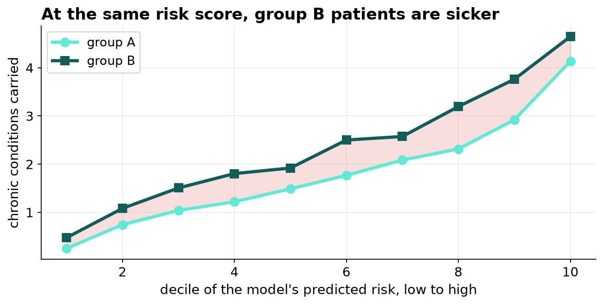

The Enrollment Model Is Working Exactly as Built, and That Is the Problem.
It predicts next year's cost with an AUC of 0.92 and enrolls group B at a third of group A's rate. They are not healthier. At the same risk score they carry 16 percent more chronic conditions, because the same illness costs our system less when the patient has more trouble reaching us.
Recommendation
Change what the model predicts, from next year's cost to next year's chronic-condition count. It is a one-line change to the training target, the data is already in the record, and it puts more genuinely high-need patients into the program than the current model does. Whether to go further and equalize enrollment rates outright is a policy decision for the executive, not a technical one for us.
What we found
The program has room for about 3 percent of the panel. The model ranks everyone by predicted cost and the top slice is enrolled.
| Group A | Group B | |
|---|---|---|
| Share of our patients | 70.6% | 29.4% |
| Share of program places | 86.8% | 13.2% |
| Enrollment rate | 3.72% | 1.36% |
We checked the obvious explanation first. If group B genuinely costs less, a cost model is right to rank them lower and there is nothing to answer for.
They are not less sick. They are less served.

At the same predicted risk, group B patients carry 16 percent more chronic conditions, and in the eighth decile the gap reaches 38 percent. They also have fewer primary-care visits and more emergency visits at every level of illness, which is the pattern you see when routine care is hard to reach until it cannot be postponed.
At the same number of chronic conditions, a group B patient generates 59 to 72 percent of the spending a group A patient does. Cost measures illness and access together, and we have been reading the combined number as though it were illness alone.
Why our fairness checks did not catch this
The model is close to calibrated within both groups. When it predicts fourteen thousand dollars for a group A patient they cost 14.3; when it predicts twelve thousand for a group B patient they cost 10.7, so if anything we over-estimate group B's spending.
Every check we run compares the model's predictions against cost, and cost is where the problem is. A review of this kind will return clean on this model every time it is run. That is worth stating plainly, because the reviews were not done badly.
What the options actually buy

| Approach | Group B share | Enrollees who are genuinely high-need |
|---|---|---|
| As deployed | 13.2% | 84.7% |
| Adjust thresholds by group | 29.9% | 85.4% |
| Predict health need instead of cost | 19.7% | 86.6% |
| Both together | 29.9% | 84.7% |
Changing the target is the change we recommend, because it improves the measurement itself. It does not reach proportional representation, and we should be honest about why: the other things the model looks at, visits and past spending, carry the same access gap the cost label did.
Adjusting thresholds by group would close the remaining gap immediately. It also reorders nobody, and it is a decision about how to allocate a scarce program rather than a way of measuring need better. It belongs with the executive and it should appear in the minutes.
What we are asking for
One. Approve retraining the enrollment model on next year's chronic-condition count. No new data collection is required.
Two. Add an audit against clinical need, not just cost, to the quarterly model review, since the current review cannot detect this class of problem.
Three. Take the threshold question to the executive as a policy decision, with this brief attached.